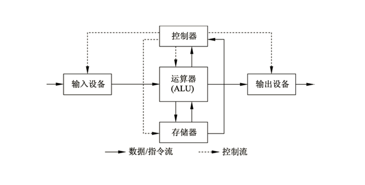
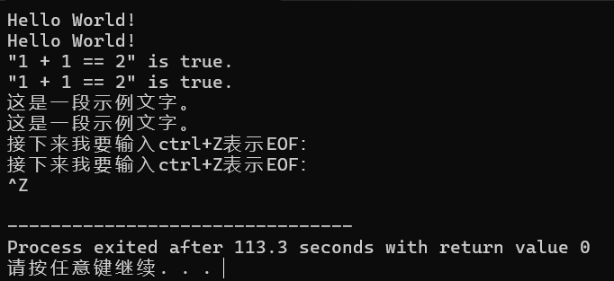
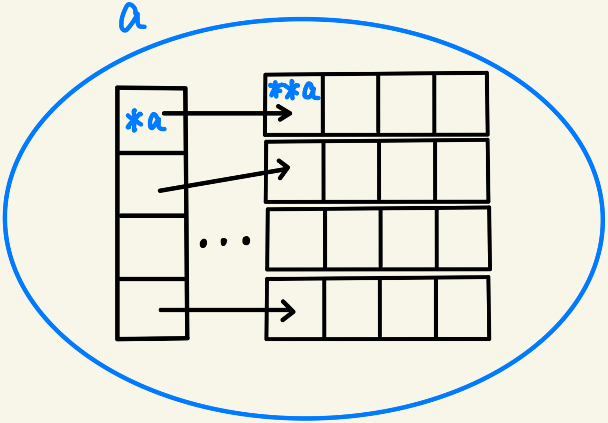

程设考前抄书
冯诺依曼计算机结构体系：


进制转换：
- 二/八/十六进制转为十进制：
三个例子：
- 十进制转为二/八/十六进制：以为例
对于转为二进制：
整数部分：
∴整数部分二进制为（逆向读取）
小数部分：
所以小数部分二进制为（正向读取）
对于八进制与十六进制同理，注意读取方向
- 二进制转为八/十六进制
对于转为八进制：
拆分成整数部分与小数部分：
整数部分： （空位左侧补0）
∴整数部分为
小数部分： （空位右侧补0）
∴小数部分为
∴ 二进制数 转换为八进制是
对于转为十六进制同理，每四位进行一次运算并组合
标识符命名规范
①只能含有字母（区分大小写）、数字、下划线，且只能以字母、下划线开头；
②常用小写字符+下划线/各单词首字母大写（有时候第一个首字母不大写）命名标识符，如my_value 或myValue；
③不能使用关键字命名标识符，某些库文件定义的标识符不能重复命名，不建议以下划线+大写字母的方式命名；
④宏命名所有字符全部大写（规范）
c/c++中，小数常量默认为double类型
把一个包含小数点的常量赋值给float型变量时，建议在数字后面加一个f/F
profit = 2150.48f
来明确指定2150.48为float数
把一个包含小数点的常量赋值给long double型变量时，建议在数字后面加一个l/L
profit = 2150.48l
来明确指定2150.48为long double数
（l后缀也用来表示long int，取决于具体情况）
（另外，字母u和l分别表示unsigned和long）
c/c++的注释不能嵌套（针对于/**/）
举几个例子：
/* abc /* def */ ghi */ 是错误的；
/* abc /* def */ 是可行的，第二个/* 被当作普通文本；
/* abc // def // ghi */ 是可行的，//注释被当作普通文本；
// abc /* def // ghi */ 也能跑，唯一起到注释作用的只有最前面的//；
转换说明的大体格式为%m.pX(%-m.pX)
X是转换说明符（字母）
比如 d 表示十进制整数， i 表示整数（scanf时不指定进制）， f 表示十进制浮点数；在X前加 l 表示long，加 ll 表示long long
p表示精度（数字）
对于转换说明符d，p表示最小显示数字（至少会打印出p个数字），若不足在数前补0（p默认为1）；
对于转换说明符f，表示打印出小数点后p位（p=0则不显示小数点）（p默认为6），
m表示最小字符宽度，表示“打印时最小需要占据几个字符的宽度”，如果要显示的字符少于m，会在值的左侧补足空格（右对齐）；在m的前面加-号会导致左对齐
一个例子：对于123.45，通过%10.3f转换后显示为：
123.450
三个空格，保留小数点后三位，总共占据了10个字符宽度（注意小数点也占一个宽度）
printf显示某些特定字符：
\\ 显示反斜杠符 \
\" 显示双引号 “ （单引号同理）
%% 显示百分号 %（不是\%）
\? 显示问号 ?
（关于为什么会有\?这种用法，见“三字符组”）
（但是三字符组太罕见了，Visual C++ 2010直接默认不支持，g++也会给出警告，所以不要用）
八/十六进制转义序列也是一种不常用的转义序列
八进制转义序列格式是\+八进制数字（最大值通常是八进制的377）
十六进制转义序列格式是\x+十六进制数字（表示成无符号字符，所以值不超过FF）
使用例：

当需要在字符串中嵌入非打印字符（如控制字符）时，使用八进制或十六进制转义序列可以方便地表示这些字符。
运算符/和运算符%用于负操作数（整数）时，结果是难以确定的（C99之前）
C99及之后，对于涉及负数的整除/求余运算，有：
- 商必须向0截断（砍掉小数部分）
- 求余时，余数的符号与被除数相同
- 必有
(a/b)*b + a%b == a（这一点对于C99之前也成立）
比如：
-9 / -7 = 1
-9 % -7 = -2
omg我也讲不出来这玩意总结还是避免这种运算(¬_¬")
左值出现在赋值操作的左侧；右值多出现在赋值操作的右侧
右值的主要含义是表示临时对象或者无法直接获取其内存地址的表达式，右值通常不可被修改（可以通过右值引用延长其生命周期，之后再说）
表达式是由操作数和运算符组成的序列，它会产生一个值
所有右值都是表达式，但不是所有表达式都是右值
赋值运算符要求左操作数必须是左值
判断左值的简单方法：能对它取地址的通常是左值（左值有明确的内存位置）
提醒：a++是右值，++a既可以是左值，也可以是右值
// Example #1
int a = 0;
int x = ++a; // ++a是右值，x现在为1，a现在为1
++(++(++a)) // ++a是左值，左值可以继续被++操作，a现在为4
// Example #2
int a = 0, b = 0;
a = b++; // 正确：b++是右值，可以出现在=右边
a++ = b; // 错误：a++是右值，不能出现在=左边
a = ++b; // 正确：++b是右值，可以出现在=右边
++a = b; // 正确：++a是左值，可以出现在=左边
关于a++：
- 为什么a++是右值？
- 它返回的是 a 增加前的临时值副本（这个副本在所在的语句结束后就被销毁）
- 而临时值没有固定的内存位置（通常在栈上，地址无法直接访问）
- 在同一个表达式中多次使用a++是未定义行为（自增的时机不明确）
int a = 1; int b = a++ + ++a + a++; // ??? printf("%d %d\n",a,b); return 0;对于gcc编译器，输出结果是
4 7，并不清楚其他编译器会如何输出┑(￣Д ￣)┍
赋值号“=”也是运算符
所以当进行a = b的操作时，不仅把1赋值给了变量a，本身也会输出一个值b
比如while(a--){ ... }等价为while(a != 0) { ... ; a -= 1;}
&&和||都具有短路特性
对于A&&B，如果A不成立，B就不会进行判断（B里面包含的赋值/运算等也不会进行）
对于A||B，如果A成立，B就不会进行判断（B里面包含的赋值/运算等也不会进行）
下面是一个用例：
#include <stdio.h>
int main() {
int score;
printf("Tell me your score: ");
scanf("%d", &score);
// 利用短路特性逐个判断分数区间
(score < 0 || score > 100) && printf("INVALID! \n") ||
(score >= 90) && printf("Perfect! \n") ||
(score >= 60) && printf("Passed:) \n") ||
(score < 60) && printf("Failed:( \n");
return 0;
}
没有if，全是短路
else和在其上方最近的尚未配对的if进行配对，与缩进无关（c语言没有缩进规范）
switch语句中，每个case后可以跟多条语句，也就是不需要大括号{}
但是，如果在case中声明局部变量，必须要用大括号括住整个case的代码，限定该局部变量的作用域（否则case1理论上可以访问case2的局部变量，这很不合理，编译不通过）
另外，每个case结尾必须加break，否则switch语句会继续执行下一个case的内容，直到遇到break;或switch语句结束
switch(value)
{
case 1:
{
int rand = random(1,3);
a.score += rand;
break;
}
case 2: case 3:
printf("...");
break;
default: return 1;
}
long long int 最大不超过（很接近），unsigned 也刚刚超过
int 和对应的 unsigned 都没有超过（非16位机器）
以上数据可以帮助自己判断是否使用long long / 使用高精度
注意会卡unsigned long long
getchar和putchar函数分别用来读/写单个字符
putchar用来写单个字符：putchar(ch);
getchar用来读取单个字符，并以int类型的值返回这个字符：
int ch = getchar(); 是正确的
char ch = getchar(); 是不合适的（虽然不会报错）
getchar的返回值需要能够表示所有可能的字符，以及EOF特殊值（通常表示为-1），而char类型不足以全部表示，于是使用int型返回值
如果使用char ch = getchar(); ，这实际上发生了一次int → char的隐式类型转换，但是由于char的位数比int小，导致EOF无法被检测（高位截断导致-1的负号丢失），因此ch == EOF永不成立
scanf会将不符合读入要求的值放回缓冲区而不是销毁，因此会有：
int num;
char ch;
scanf("%d", &num);
scanf("%c", &ch); 我的输入是：
123
a结果实际上我完成的操作是：
num = 123;
ch = '\n'; // 换行符
// (a 并没有存储到任何一个变量中，还在缓冲区内，可以被读取)原因是第一个scanf在读取到\n时将其放回到了缓冲区，导致第二个scanf优先读取了回车符，而不是a，此时就应该在第一次scanf读取后清空缓存区
有以下解决方法：
// Method #1
scanf("%d", &num);
scanf(" %c", &ch); // 用空格跳过（消费掉）空白字符（包括换行符，制表符）
// 空白字符此时不在缓冲区中
// Method #2
scanf("%d", &num);
getchar(); // getchar()读取了缓冲区中的换行符
scanf("%c", &ch);
对于getchar代替scanf的操作有一些惯用操作：
while (getchar() != '\n'); 表示清空缓冲区（如果使用得当，缓冲区内应该只会有一个\n，这个\n是可以被清除的，因为它已经被读取了，是不会放回的）
（其实更直接的方式是使用 fflush(stdin)，强制刷新输入缓冲区，但是这样写移植性差）
while ((ch = getchar()) == ' '); 表示清空连续出现的空格（不会清空\t \n），即在读取时跳过空格
（ch = getchar()两侧的括号是必要的，因为==比=优先级高）
（以上两个都常用在两次scanf中间）
while((ch = getchar()) != EOF) 用于逐个读入字符，直到文件结束（出现EOF）
举个例子：
int ch;
while((ch = getchar()) != EOF) {putchar(ch);}
// 花括号里可以塞其他的语句，比如每次getchar()都存入数组
// EOF也可以换成'\n'，这样用法上就和scanf更像了（换行则结束一次读入）
// 拓展性是很强的功能如下图所示：


每次输入一串字符串并按回车（这是缓冲区刷新的标志之一），程序就会读入并重新写出该行的文字至新行（因为读入了\n并写出，所以会自动换行），程序不会终止，直到手动在新行输入ctrl+Z表示输入EOF，程序才会结束
为什么每次读入函数时都要敲一次回车键才会对缓冲区的内容进行读取操作？
- 标准输入stdin是行缓冲模式，
- 只有当缓冲区被刷新(flush)时，数据才会真正被处理
缓冲区刷新的时机：
- 遇到换行符
\n（最常用的）
- 缓冲区满了
- 程序结束了
- 手动调用
fflush()（可能有“未定义”的风险）
如果想做到“即读即处理”，而不是进行行缓冲，在Windows系统上可以使用_getch()替代getchar()，这需要引入Windows特有的<conio.h>；在Linux系统上有<termios.h>库，使用略
注意：_getch()函数的输入不会出现在屏幕上，如果想显示输入的值，需要搭配putchar()
这里有一个有趣的举例，展示_getch()函数的特殊性：
#include <stdio.h>
#include <conio.h>
int main()
{
char ch;
while((ch = _getch()) != EOF) {putchar(ch);}
}真正的即读即处理（这里是打印），在实际输入操作中会发现
- 按backspace键只会后移光标而不删除任何字符；
- 在后移光标后输入的字符会覆盖原位置的字符；
- 按下enter键后，光标回到了当前行的首位，而不是下一行的首位
这是为什么？
因为getchar()和_getch()的机制完全不同：
- backspace键的ASCII码是8，对应退格字符，就是对应“将光标后移一格”这一操作；
- 终端的输出默认就是覆盖模式，所以后移光标后输入会覆盖之前输入的值；
- 而enter键对应的ASCII编码是13（而不是10），对应的是回车符\r而不是换行符\n，回车符的作用就是使光标回到当前行的行首；
- 然而大多数的情况下（包括getchar()）输入都存储在缓冲区中，系统会自动处理特殊字符（就像在记事本上写东西），比如backspace键会自动删除上一个字符，enter键会自动对应\r\n这一操作，但是_getch()的读入情况下就不会有这些“贴心的操作”了，毕竟_getch()只是粗暴地读入每一个输入的ASCII编码╮(╯▽╰)╭
尽量使代码中所有的类型转换都是强制类型转换，【隐性转换太凶险了】
强制类型转换包括但不限于以下运用
// Example #1
int x = 9;
float a1 = x / 7; // a1 is 1.000000... now
float a2 = (float)x / 7; // a2 is 1.285714... now
// 避免整数除法丢精度
// Example #2
int y = 1000000;
long b1 = y * y; // b1 is -727379968 now
long b2 = (long)(y * y); // b2 is -727379968 now
long b3 = (long)y * y; // b3 is 1000000000000 now
// 避免溢出，注意到b2行的类型转换已经晚了
// Example #3
*matrix = (int *)malloc((*rows) * (*cols) * sizeof(int));
...
free(memory); // 养成好习惯
// 动态分配内存，并且matrix存储int值
// Example #4
(void) printf ("Hello World!\n");
// 明确告诉所有人（Visual Studio?）我刻意抛弃了返回值13
... ...
还是转换说明符：
%u表示十进制；%o表示八进制；%x(%X)表示十六进制；没有二进制的转换说明符
（%x在输出时十以上的字母小写，而%X是大写）
%d与%i在printf中没有区别；在scanf中，%d只能匹配十进制数，而%i可以匹配十进制，八进制和十六进制的数（通过观察前缀：无、0或0x判断进制）
%c匹配‘单个字符’；%s匹配”字符串”（也就是char和char*）
%f表示浮点数
对于scanf输入，%f表示float，%lf表示double，不能混用；
而对于printf输出，使用%f和%lf没什么区别（都会当作double处理）
（C99前只能使用%f输出，C99及之后允许有无意义的l）
%a、%e和%g也都是表示浮点数的
%a会以十六进制输出浮点数（怪哦？）
%e以科学计数法的形式输出浮点数（100000f 显示为 1.000000e+005）
而%g会在浮点数的指数小于-4或达到精度时（人话：数值太大或太小）自动选择%e的输出方式，否则以%f的形式输出
（另外，%f, %e默认会保留六位小数且包含末位的0，而%g一定会删除末位多余的0，比如对于%g，100000f 显示为 100000；100000000f 显示为 1e+008）
%p匹配指针/地址，具体而言：
int main(void)
{
int a = 100;
int *p = &a;
// ("int *p = &a;" equals to "int *p; p = &a")
printf("%p\n",&a); // 变量a的地址
printf("%p\n", p); // p指针的内容，依旧是变量a的地址
printf("%p\n",*p); // 变量a的十六进制表示
printf("%p\n", a); // 变量a的十六进制表示 (*p == a)
printf("%p\n",&p); // p指针本身的地址
// 注意，用%p打印变量a的值本身是一种未定义行为，不要尝试
return 0;
}输出结果是：（仅供参考）
000000000062FE1C
000000000062FE1C
0000000000000064
0000000000000064
000000000062FE10
// 注：打印地址的位数取决于编译器位数，不足左边补0顺带一提，如果我声明int *p2; p2 = p，那么两个指针会指向同一个地址，而两个指针本身的地址依旧不同
关于指针的知识之后再补吧(￣m￣）
比如嵌套循环的跳出，这里让gpt写了个示例：
#include <stdio.h>
// 在多维数组中找到target特定值
int main() {
int arr[2][3][3] = {
{{1,2,3}, {4,5,6}, {7,8,9}},
{{10,11,12}, {13,14,15}, {16,17,18}}
};
int target = 14;
int i, j, k;
// 搜索目标值
for(i = 0; i < 2; i++) {
for(j = 0; j < 3; j++) {
for(k = 0; k < 3; k++) {
if(arr[i][j][k] == target) {
goto found;
// 找到目标值后直接跳出嵌套循环
}
}
}
}
printf("未找到值 %d\n", target);
goto end;
found:
printf("找到值 %d ，在位置 arr[%d][%d][%d]\n", target, i, j, k);
end:
return 0;
}还是有点用？
你甚至可以用char对应的ASCII码计算和比大小
‘a’ = 97 ; ‘A’ = 65 ; ‘0’ = 48
char也分有符号型和无符号型，但是最好不要刻意区分（谁会在char里塞一个不在signed范围的小数字）
// Example #1
typedef long long int ll;
// 之后声明新ll int时就可以直接写：ll giant_number;
// Example #2
typedef struct Monster
{
char name[20];
int hp;
int atk;
int def;
int special;
int score;
} Monster;
// 之后声明新结构体时就可以直接写：Monster monster;
（比如分配动态内存时，考虑到不同位数机器上，各个数据类型的大小可能不同，这时用sizeof函数可以正确分配动态内存，提升代码的可移植性）
sizeof()的返回值是size_t，对于32位平台，size_t的定义是：
#ifndef __SIZE_T
#define __SIZE_T
typedef unsigned int size_t;
#endif在 32 位系统中，通常 size_t 是 32 位无符号整数 (unsigned int)。
在 64 位系统中，通常 size_t 是 64 位无符号整数 (unsigned long 或 unsigned long long)。
size_t的实际具体大小取决于平台，但肯定是个unsigned
a[n]下标从0开始，上限是n-1，但c/c++不会进行越界检查，也就是说一个数组int a[10]，对a[10]赋值是不会报错的，只不过是a[9]之后的一块神秘未知位置内存被调用了，天知道会不会覆盖什么值甚至可以对a[-1]访问赋值
小 心 R E
这是原型：void *memcpy(void *dest, const void *src, size_t n);
这是例子：
#include <string.h> ...
// 省略部分内容
int a[2][5];
int b[2][5] = {{1, 2, 3, 4, 5},{6, 7, 8, 9, 10}};
memcpy(a, b, sizeof(b));
// 将b整体赋给a
各个表达式依次进行，最后返回表达式n的返回值
（casio计算器也有这个）
比如：对于二维数组a，a[i,j]表示a[j]
所以说指针是神
但是对于数组型的形参改变可以在实参中直接体现（不像是值传递）
因为指针是神（int a[n], *a = a[0], *(a+k) = a[k]）
（具体需要看数组退化为指针这部分）
如果实参与形参不匹配，函数调用也能实现：
如果编译器在调用前遇到了函数原型，那么编译器会对实参进行对应的隐式类型转换；
如果编译器在调用前没有遇到函数原型，编译器只会执行默认的参数提升：把float转换为double，把short和char转换为int，这样可能会出问题，比如说函数内有printf("%d",a);，a可能是double型的参数
就以二维数组来说，行可以不指定，但列数必须指定
解决方案包括指针数组和变长数组形参：
（注意：变长数组VLA是C99+的特性，C++没有这种特性，不能用）
// Solution #1
void func(int *arr[], int rows);
// 使用指针数组
// Solution #2
void func(int rows, int cols, int arr[rows][cols]);
// 使用变长数组，注意必须先声明rows和cols才能声明arr
// void func(int arr[rows][cols], int rows, int cols) 不正确
// void func(int, int, int [][*]) 是正确的，[*]等价于[col]
// *是特殊的占位符，表示数组的第二维是由前面声明的形式参数（col）决定的（如果留空则会视为未初始化，所以用*占位）
另外，C99允许在数组参数声明中使用关键字static（仅允许第一维），这会告诉编译器传入数组的第一维的长度至少为某个值，比如
void func(int a[static ROWS][10], int n) 意为传入的数组a至少有ROWS行，在调用内存方面会有优化（但如果实际传入的数组不足ROWS 行，会导致“未定义行为”）
另外，C99允许使用复合字面量，使用例：
void print_array(int arr[], int size) {
for(int i = 0; i < size; i++) {
printf("%d ", arr[i]);
}
printf("\n");
}
int main()
{
print_array((int[]){1, 2, 3, 4, 5}, 5);
// 相当于传递了一个数组{1, 2, 3, 4, 5}及其长度size = 5
return 0;
}如果一个特定变量没有必要专门为其设一个变量名（可能这个特定的值只用到了一次），就可以直接塞到函数调用中
return 0 和 exit(0) 和 exit(EXIT_SUCCESS) 都表示正常退出
return 1 和 exit(EXIT_FAILURE) 都表示异常退出
摘自kimi：
这三个函数都是用于在数组中进行快速排序算法中的分区操作的实现。分区操作的目的是将数组分为两部分，使得左边的所有元素都不大于基准值（pivot），右边的所有元素都不小于基准值。下面是对这三个函数的详细解释：
partition_1
这个函数实现了快速排序中的Lomuto分区方案。它使用两个指针i和j，分别从数组的两端开始向中间扫描。i从左边开始，j从右边开始。如果arr[j]大于等于pivot，则j向左移动；如果arr[i]小于等于pivot，则i向右移动。当i < j时，循环继续。如果i < j，交换arr[i]和arr[j]。最后，将pivot（即arr[low]）与arr[i]交换，使得pivot位于正确的位置。
partition_2
这个函数实现了快速排序中的Hoare分区方案。与partition_1类似，它也使用两个指针i和j，但是它的操作方式略有不同。它在每次循环中，如果找到arr[j]小于pivot，则将arr[i]的值赋给arr[j]，并将i向右移动；如果找到arr[i]大于pivot，则将arr[i]的值赋给arr[j]，并将j向左移动。这样，i和j会逐渐靠近，直到它们相遇或交叉。最后，将pivot放在i的位置。
partition_3
这个函数实现了一个类似于Dutch national flag问题的分区方案，它是对快速排序中Dijkstra分区方案的一个变种。它使用三个指针：previous和current用于遍历数组，pivot用于存储基准值。previous用于跟踪小于等于pivot的元素的最后一个位置，current用于遍历数组。如果arr[current]小于等于pivot，则交换arr[current]和arr[previous+1]，并将previous加1。最后，将pivot与arr[previous]交换，使得pivot位于正确的位置。
/*
* Method #1
* 霍尔法（双向扫描法）： pivot不动，左右两侧“指针”向pivot方向靠近直到重合，遇到arr[i] > pivot > arr[j] （两个不等号同时成立）的情况就交换arr[i], arr[j]的值
*/
int partition_1(int arr[], int low, int high)
{
int pivot = arr[low]; // 这里以第一个元素的值作为pivot
int i = low, j = high;
// 应当时刻注意是否有i < j
while (i < j)
{
while (i < j && arr[j] >= pivot)
j--;
while (i < j && arr[i] <= pivot)
i++;
// 到达这一步，说明arr[i] > pivot > arr[j]，可以将两者交换
if (i < j)
{
swap(arr[i],arr[j]);
}
}
// 这里把i,j两个"指针"重合时指向的元素和pivot对应的元素交换位置
swap(arr[low],arr[i]);
return i; // pivot值所在的位置是arr[i]
}
/*
* Method #2
* 挖坑法：取出pivot的值作为“坑”，依旧是左右两侧“指针”，每次找到arr[i] > pivot / pivot > arr[j]（只要有一个不等号成立，而不是方法一中两个不等号都成立才会进行下一步操作）就会用“指针”当前指向的值去“填坑”，并在指针位置形成一个新坑，最后的坑就是pivot的新位置
*/
int partition_2(int arr[], int low, int high) {
int pivot = arr[low]; // 这里还是以第一个元素的值作为pivot
int i = low, j = high;
// 依旧应当时刻注意是否有i < j
while (i < j)
{
// 先从右向左找小于基准值的数
while (i < j && arr[j] >= pivot)
j--;
if (i < j)
{
arr[i] = arr[j];
i++;
}
// 之后从左向右找大于基准值的数
while (i < j && arr[i] <= pivot)
i++;
if (i < j)
{
arr[j] = arr[i];
j--;
}
}
// 将基准值放到最终形成的坑
arr[i] = pivot;
return i;
}
/*
* Method #3
* 单向扫描法：
*/
int partition_3(int arr[], int left, int right)
{
int pivot = arr[left]; // 这里依旧以第一个元素的值作为pivot
int previous = left; // 始终指向≤ pivot 的区域的最后一个元素
int current = left + 1; // 当前正在比较的元素位置
while (current <= right)
{
// 注意短路特性，使得 previous 只在找到≤ pivot 的元素时才会自增
// 而且在确保previous始终在current左侧时才会执行交换
if (arr[current] <= pivot && ++previous != current)
{
swap(arr[current], arr[previous]);
}
current++;
}
swap(arr[previous], arr[left]);
return previous;
}
// 这里是递归操作区
void quickSort(int arr[], int low, int high)
{
if (low < high)
{
// 分区(partition)，并且获取新主元的位置
int pivotIndex = partition(arr, low, high);
// 对pivot左侧子数组排序
quickSort(arr, low, pivotIndex - 1);
// 对pivot右侧子数组排序
quickSort(arr, pivotIndex + 1, high);
}
}
// 主函数中调用函数方式为quickSort(arr[], 0, n-1)，表示对所有元素排序
局部变量，其作用域局限在该代码块，生命周期仅限于每次调用（当函数调用结束时，该局部变量被销毁，下次调用时重新赋值）
在局部变量声明中放置static可以使局部变量由自动存储期限变为静态存储期限，拥有静态存储期限的变量拥有永久的存储单元，所以在整个程序运行期间都会保留其值
此处摘抄期中考试原题：
阅读以下代码，给出运行结果，并给出理由
#include <iostream>
static int a = 0;
int b = 0;
void count()
{
static int c = 0;
int d = 0;
std::cout << "a = " << a++ << std::endl;
std::cout << "b = " << ++b << std::endl;
std::cout << "c = " << c++ << std::endl;
std::cout << "d = " << ++d << std::endl;
}
int main()
{
count();
count();
count();
count();
return 0;
}这里是答案和解析：
形参也是一种局部变量，不过它的初始化方式和时机和纯粹的形式参数不同（函数调用时初始化，在函数代码块内都有效）
形参的作用域，生命周期，内存分配（栈区）都符合局部变量的特征
程序块和作用域
什么是程序块?
{
int temp = i;
i = j;
j = temp;
}这个用大括号括住的就是一个程序块
声明在程序块中为自动存储期限，变量具有块作用域
一个函数体就是一个大的程序块
作用域规则使得相同的标识符能够具有不同的意义
当程序块内部声明命名一个标识符时，如果这个标识符已经可见（当前位置可以访问和使用这个标识符），那么新的声明会临时性的隐藏旧的声明，在新的声明的生命周期结束时，标识符会重新获得旧的声明
简称：内层声明在作用域内覆盖外层声明
这里有一个例子：

Declaration 2隐藏了Declaration 1，所以赋值i = 1引用的是Declaration 2中的形参；
Declaration 3隐藏了Declaration 1，并且Declaration 2超过了作用域，所以判定i > 0引用了Declaration 3的变量；
Declaration 4隐藏了Declaration 3，所以赋值i = 3引用了Declaration 4中的变量
赋值i = 4引用了Declaration 3的变量，由于Declaration 4超过了作用域，所以不能被引用
赋值i = 5引用了Declaration 1的变量
指针在多数情况下就是地址
对于指针p，*p表示p指向的对象；对于变量x，&x表示x在内存中的地址
可以把*（间接寻址运算符）和&（取地址运算符）看作互为逆运算
*&a 和 &*a 和a在表达式中是等价的，虽然类型不一定相同
至于在声明指针时（int *p）出现的*，其实并不是间接寻址运算符，只是表明“这个数据类型是（指向*号左侧的数据类型的）指针”
写作int* p而不是int *p可能更好理解此处*的实际作用
这下就更好理解为什么int *p = &a; 和 "int *p; p = &a"是等价的了
总结一下上面的内容就是：
*的作用包括：声明一个变量为指针；寻址（；乘号✖）
如果指针p指向了变量a，那么*p和a在访问值上没有任何区别，比如：
*p == a是成立的
a++ 和(*p)++是等价的（和*p++不等价！）
const与指针：
// Example #1
int a[5] = {1, 2, 3, 4, 5};
const int *p = &a;
*p++; // LEGAL
(*p)++; // WRONG
// const int *p中的const修饰的是*p，而不是p本身
// Example #2
int a[5] = {1, 2, 3, 4, 5};
int * const p = &a;
*p++; // WRONG
(*p)++; // LEGAL
// int * const p中的const修饰的是p本身，而不是*p
// const int * const p = &a; 也是可行的
指针可以作为返回值
但是不要返回指向自动局部变量（在函数内部，不使用static声明的变量）的指针
因为函数返回后，自动局部变量就被销毁了
此时指针成为“悬挂指针”，指向已经被释放的内存，不应该再被解引用
指针和一维数组
一个关于一维数组的例子：
int a[10] = {1, 2, 3, 4, 5, 6, 7, 8, 9, 10};
int *p = a; // CORRECT
int *q = &a; // PROBABLY INVALID
int *r = a[5]; // WRONG
int *s = &a[5]; // CORRECT指针p指向的是数组的第一个元素（a其实就是指向a[10]首元素的指针），*p == a[0] && a[0] == 1;
指针q指向的也是数组的第一个元素，但是类型实际上不匹配（q应该是指向数组第一个元素的指针，而不是指向数组对象的指针），会有类型警告。正确的写法是：int (*q)[10] = &a;（括号不可省略，详见此）
指针r的赋值是错误的，不能把数值赋给指针
指针s指向的是数组的第6个元素a[5]
a作为数组，其本质是一个指向数组第一个元素的常量指针（a++是非法的），这句话和这段内容可以帮助理解上面的内容
int a[10];
// 在数值上，a == &a[0]；a + i == &a[i]
// 在类型上，sizeof(a)返回数组大小；sizeof(&a[0])返回指针大小；而sizeof(a + i)返回的也是指针大小
// 因为在sizeof(a)中a代表数组，而sizeof(a + i)中a已经“退化”成了指针参与指针运算
int *q[10] 和 int (*q)[10]有何不同？
int *q[10]会被解析为int *(q[10])，q[10]表示先和q结合，并且是一个数组类型。再用*和类型int结合，q成为一个包含 10 个指向int的指针的 指针数组；
（简单来说：声明一个数组q[10]，其存储内容是指针int*）
int (*q)[10]中，()迫使q先结合， 此时q变成 一个指针， 再和[10]结合，q指向一个含有 10 个int型数据的数组。变成了指向数组的 数组指针
（简单来说：声明一个指针q，其指向了数组int[10]）
数组声明a[]和指针声明*a有什么异同
相同点：
①对于形式参数而言，a[]和*a没有区别
（数组作为参数时总是会退化为指针）
int func(int a[], int n) 相当于 int func(int *a, int n)
②都可以用下标访问元素
int arr[] = {1, 2, 3, 4, 5};
int *p = arr;
arr[0] = -1; // VALID
p[1] = -2; // VALID③本质上a都存储地址值
不同点：
①a[]在编译时就分配好了连续内存空间，而*a只分配了指针本身的空间，需要额外分配存储空间：
int a[5] = {1, 2, 3, 4, 5}; // 在栈上自动分配
int *a = (int *)malloc(5 * sizeof(int)); // 在堆上手动分配②数组名a不能被赋值（本质是常量指针），但指针a可以
int arr[] = {1, 2, 3, 4, 5};
int *p = arr;
arr = p; // WRONG
p = arr; // CORRECT③sizeof对应的值不一样，一个是数组，一个是指针
指针与自增/自减符
| *p++ 或 *(p++) | 先取出*p并作为返回值，再后移指针 |
| (*p)++ | 先取出*p并作为返回值，再使*p（值）自增 |
| *++p 或 *(++p) | 先后移指针，再取出*(p+1)（也就是新的*p）作为返回值 |
| ++*p 或 ++(*p) | 先取出*p并使*p（值）自增，自增后的值作为返回值 |
指针和多维数组
首先，多维数组是用多个一维数组模拟出来的
从内存分配上说，a[m][n]就是m个长度为n的一维数组，在内存分配时是首尾连续相连的
从指针上也可以理解为，a[m][n]就是一个长度为m的一维数组，而这个一维数组的每个元素都是一个长度为n的一维数组（如图所示）


对于a的解引用，可以简单地说：
a对应二维数组（类型是int (*)[n]），（数组衰减为指针时）指向了第一个一维数组a[0]（*a）；
*a对应一维数组（类型是int *），（数组衰减为指针时）指向了第一个元素a[0][0]（**a）；
**a对应a[0][0]元素本身（类型是int）
a和*a实际指向的地址是一样的，它们最大的区别在于类型不同
当数组在大多数表达式中使用时，它会自动转换（衰减）为指向其第一个元素的指针，在sizeof()，取地址&，或使用字符串字面量初始化等情况下不会衰减
这就是为什么大多数情况下数组能经常和指针混着用，但是说到底数组和指针确实不可互换
利用指针处理二维数组的行和列：
int arr[4][4];
// 给某个特定元素赋值
void modifyElement(int (*arr)[4], int row, int col, int newValue)
{
*(*(arr + row) + col) = newValue;
// 此处的行和列都是从0开始的，而不是1
// 等价于 arr[row][col] = newValue
}
// 清空指定行
void clearRow(int (*arr)[4], int row, int cols)
{
for(int i = 0; i < cols; j++)
*(*(arr + row) + i) = 0;
}
// 清空指定列
void clearColumn(int (*arr)[4], int col, int rows)
{
for(int i = 0; i < rows; i++)
*(*(arr + i) + col) = 0;
}
对于一维数组a[i]，a[i] ⇆ *(a + i) ⇆ *(i + a) ⇆ i[a]
合法但不合理
如果字符串字面量过长，可以通过多种方法分多行延续：
// Method #1
int main ()
{
printf("The quick brown fox \
jumps over a lazy dog.")
}
// 使用续行符，注意下一行不能出现空白字符（会破坏缩进）
// Method #2
int main()
{
printf("The quick brown fox"
"jumps over a lazy dog.")
}
// 使用多个字符串字面量，编译器会自动连接（不破坏缩进）
// Method #3 多用几个printf()
特别的是字符串总以\0结尾（结束符，标志着字符串末尾，占据一个字节的空间，strlen函数不会计算该字符）
分配动态空间的时候应该为\0多分配一个字符空间，有\0编译器才能识别出字符串应在何处结束
c语言允许对指针取下标：
char ch = "abc"[1] 即为char ch = 'b'
（字符串字面量退化为指针）
字符串变量的初始化
类比int arr[5] = {1,2,3,4,5};
有char ch[6] = {'h', 'e', 'l', 'l', 'o', '\0'};
（'\0'不可省略）
更简化的写法是char ch[6] = "hello";
字符数组与字符指针
char greeting[] = "Hello World!";
char *greeting = "Hello World!";
这两行代码分别声明了数组与指针，第一行代码中声明的数组可以被修改，而第二行代码中声明的指针指向字符串字面量，是不可修改的
读写字符串
- 用printf或puts函数写
使用%s转换说明符+printf函数：printf("%s",str);
使用puts函数：puts(str); （puts函数会自动换行！）
printf("%s\n",str);等价为puts(str);
- 用scanf或gets函数读
使用%s转换说明符+scanf函数：scanf("%s",str);
（不需要加取地址符&，因为str退化成了指针来处理）
scanf在读取字符的时候始终跳过空白字符，只要遇到空白字符（空格，制表符，换行符），scanf立刻停止字符串的读入
此时使用gets函数效果更好
gets函数不会跳过任何空白字符，只会因为遇到换行符停止读入
gets函数不会读入结尾的换行符，而是用\0代替
注意：两个读入方法都不会主动避免数组越界的情况
设计一个读入字符串的函数：
（n为字符串的最大容量，函数返回值为实际读取的字符数）
int read_str(char* str, int n)
{
int ch, i = 0;
while( (ch = getchar()) != '\n')
if (i < n)
*(str + i++) = ch; // 先存值，再使索引i自增
*(str + i) = '\0'; // 结尾加\0
return i;
}设计一个访问字符串中字符的函数：
（示例函数寻找特定字符在字符串中的数量）
int count(const char* str, char target)
{
int count = 0;
for(int i = 0; *(str + i) != '\0'; i++)
if (*(str + i) == target)
count++;
return count;
}
// 上面的写法是偏向数组型操作的
// 下面的一种写法，体现出了指针操作的简便性
int count(const char* str, char target)
{
int count = 0;
for(; *str != '\0'; str++)
if (*str == target)
count++;
return count;
}处理字符串相比处理数组有一点方便之处在于：字符串以\0结尾，而数组没有特定的结束方式，所以处理数组的函数往往需要额外传递长度参数，而字符串处理函数不需要
另外，在形式参数声明时，str[]和*str没有任何区别
利用<string.h>中的函数高效处理字符串
（此处不讨论memcpy之类的函数）
char *strcpy(char *s1, const char *s2)将s2复制给s1
（把s2指向的字符串复制到s1指向的数组）
strcpy函数有返回值s1而不是void，这样做有很大的好处：
这使得strcpy(str1, strcpy(str2, str3))这样的嵌套用法得以实现
size_t strlen(const char *s) 获取字符串s的长度（不含\0）
char *strcat(char *s1, const char *s2) 将s2追加到s1（返回值s1）
（s2没有变化）
strcpy与strcat，都有其安全版的变种：
char *strncpy(char *s1, const char *s2, size_t n);
char *strncat(char *s1, const char *s2, size_t n);
多余的n参数用于限定复制的字符数
int strcmp(const char *s1, const char *s2) 字符串比较
返回值int的计算原理是：
两个字符串从第一个元素开始比较，如果第一次出现s1[i] != s2[i]，则返回s1[i] - s2[i]（ASCII码的值）
如果两个字符串不等长且等长部分完全相同，也返回s1[i] - s2[i] （s1[i]或s2[i]为'\0'）
（斜体部分可能视具体的编译器有所不同）
如果两个字符串完全相同，返回0
更常用的，当遇到不同字符时：
ASCII值：控制字符 < 空格 < 数字 < 大写字母 < 小写字母
两个字符串不等长且等长部分完全相同：长字符串 > 短字符串
strlen函数实现
// Classical
size_t strlen(const char *s)
{
for (size_t n = 0; *s != '\0'; s++)
n++;
return n;
}
// 考虑到'\0'的ASCII值就是0，也就是false
// *s != '\0' 和 *s 条件是等价的
size_t strlen(const char *s)
{
for (size_t n = 0; *s; s++)
n++;
return n;
}
// for语句的判断*s与之后的s++可以糅合为*s++
// 考虑使用while语句精简
size_t strlen(const char *s)
{
size_t n = 0;
while(*s++)
n++;
return n;
}
// tip:
// while (*s) s++; 与while (*s++);不一样
// 后者相比前者，s指向的位置靠后一位
// while (*s) s++; 与while (*s++); s--;是一样的
strcat函数实现
char *strcat(char *s1, const char *s2)
{
char *p = s1;
// 找到s1的末端
while(*p) // *p != '\0'
p++;
// 逐个元素替换
while(*p++ = *s2++);
// 使字符串正确终止
*p = '\0';
return s1;
}对于while(*p++ = *s2++);，其等价为：
（上面的这种赋值写法编译器可能会给出警告）
（对于gcc编译器，可以多套一对括号以消除警告——）
（while((*p++ = *s2++));）
while(*s2 != '\0')
{
*p = *s2;
p++;
s2++;
}
建立参差不齐的数组
char fruits[][11] = {"Apple", "Banana", "Strawberry"};
char *fruits[] = {"Apple", "Banana", "Strawberry"};
前者生成的是“一大块的字符串”
后者生成的是“一串串的字符串”
前者fruits是一个二维数组，行列都指定
后者fruits是一个存储了 指向一维数组的指针 的数组，每个一维数组的大小由初始化时决定（或者动态分配）
关于上一点的一些问题
为什么char (*fruits)[11] = {"Apple", "Banana", "Strawberry"};是错误的？
char (*fruits)[11] 表示声明了一个指针，指向char[11]类型的元素，而{"Apple", "Banana", "Strawberry"}是三个字符串的组合，也就是char*[]，两者类型不匹配
而char *fruits[]表示声明了一个数组（数组长度在初始化时决定），数组的元素类型是char*（字符串），这与{"Apple", "Banana", "Strawberry"}是匹配的
char **fruits = {"Apple", "Banana", "Strawberry"};也是错误的2aqz
**fruit本身不会存储字符串（连内存空间都没分配）
正确的做法是：（省略了fruits是否为NULL的检查部分）
// 1. 先动态分配指针数组内存，再使用strdup为每个字符串分配内存并初始化
char **fruits = (char **)malloc(3 * sizeof(char *));
fruits[0] = strdup("Apple");
fruits[1] = strdup("Banana");
fruits[2] = strdup("Strawberry");
// 2. 指向已存在的字符串指针数组
char *varieties[] = {"Apple", "Banana", "Strawberry"};
char **fruits = varieties;总结：
char *q[]与char q[][]都可以直接采用字符串字面量初始化，它们的本质都是数组（在栈上分配了相应的内存）；char **p和char (*p)[]都不可以直接采用字符串字面量初始化，它们的本质都是指针（没有分配任何内存）
char **p作为指针指向的是char *q[]而不是char q[][]
char (*p)[]作为指针指向的是char q[][]而不是char *q[]
关于如何解释这样复杂的声明，详见此
int main()可以有传入参数：
int main(int argc, char *argv[])可以让C程序访问命令行参数
argc（argument count）表示命令行参数的数量
argv（argument vector）是一个字符指针数组：
argv[0]一定是程序名
argv[1]~…依次表示命令行参数
argv[argc]一定是NULL指针（作为遍历argv结束的条件）
printf()的函数声明是：int printf(const char *format, ...)
除了常用的使用字符串字面量作为实际参数，也可以使用字符串变量
比如：
char str[] = "e = %.9f...";
double e = 2.718281828;
printf(str,e);
// 输出结果是：e = 2.718281828...需要注意的是，printf会把%作为转换说明的开始，所以除非必要，不要传入带%的字符串
三种打印函数的函数声明
int printf(const char *format, ...);
int putchar(int c);
int puts(const char *str);
正确/错误输出“一个换行符”的方式：
printf("%c", '\n'); （没有问题）
printf("%c", "\n"); （类型不匹配）
printf("%s", '\n'); （程序直接崩了）
printf("%s", "\n"); （没有问题）
printf("\n"); （没有问题）
printf('\n'); （printf首先需要一个格式化字符串作为输入，而非字符）
putchar('\n'); （没有问题）
putchar("\n"); （putchar期望获取char而不是char*）
puts('\n'); （puts期望获取char*而不是char）
puts("\n"); （puts会在输出字符串后自动添加一个\n，所以实际上输出了两个换行符）
puts(""); （puts会在输出字符串后自动添加一个\n，所以是正确的）
结构变量由多个成员组成，成员可以具有不同的类型：
// Example
struct info {
int number;
char name[NAME_LEN + 1];
int on_hand;
} part1, part2 = {20, "Drive", 10}; 上述代码声明了一个非匿名结构体info，包含多个成员，同时声明了part1与part2作为该种类型的变量，并为part2进行了初始化
实际上为结构体命名（结构标记）是非必须的，但往往是有用的，创建标记的结构体可以用来声明变量：struct info part3;
如果不标记结构体（匿名），则只能在创建结构体时声明变量
另一种为结构体“命名”的方式是使用typedef
typedef struct info {
int number;
char name[NAME_LEN + 1];
int on_hand;
} INFO Info info
// 上述代码给整个结构进行了类型名定义
// INFO part1; 与 struct info part1; 都是有效声明
// 代码中INFO, Info, info都是结构体的别名
part1与part2不必在结构体声明时进行声明，见part3
结构体变量各成员未初始化的内容默认为0（字符串\0）
成员可以部分初始化，可以不初始化
C99+有“指定初始化”，比如：
struct info part4 = {.name = "Screen", .number = 114};
用.＋成员名称 = 内容 表示对某一部分指定初始化，不用考虑成员声明顺序
在上面的例子中.number可以删去，因为编译器默认114是对name之后成员的赋值（114的前面是对name的赋值）
操作结构体
对于上面的结构体，可以用变量名.成员名访问
比如：part1.number += part2.on_hand;
上述代码涉及了句点运算符"." ，其优先级和后缀自增/自减相同
结构成员是左值
对于类型兼容的两个变量（比如part1与part2，两者都是由info结构体定义的），可以直接使用赋值号进行赋值（part1 = part2;是可行的，即使成员中可能有数组）
但是下面的part1与part2是类型不兼容的：
struct {
int number;
char name[NAME_LEN + 1];
int on_hand;
} part1 = {20, "Drive", 10};
struct {
int number;
char name[NAME_LEN + 1];
int on_hand;
} part2 = {10, "Dive", 20}, part3;
part1 = part2; // INCORRECT
part3 = part2; // CORRECT结构体没有==；!=等比较方式
结构体有很多作用，包括但不限于：
/* 数组整体复制 */
struct array {
int a[10];
} Template = {{1,2,3,4,5,6,7,8,9,10}}; // 注意双{}
struct array arr;
arr = Template;
for (int i = 0; i < 10 ;i++)
printf("%d ",arr.a[i]);
/* 函数返回多个值 */
typedef struct {
int sum;
int product;
} Result;
// 返回a+b与a×b的值（通过结构体访问）
Result calculate(int a, int b) {
Result r;
r.sum = a + b;
r.product = a * b;
return r;
}
结构体允许嵌套（但不要嵌套定义）
结构体允许与数组结合
struct clothes {
float prize;
char color;
int size;
};
struct cups {
float prize;
char color;
char style[10];
};
struct goods {
int varieties;
struct clothes clothes;
struct cups cups;
} ;
struct goods Rack[3]; // 结构体数组
Rack[0].cups.prize = 20; // 访问赋值
联合union和结构体struct很像（声明等内容），但在内存存储上区别很大：
struct各个成员的数据无间隔地存储在连续内存中，就和数组一样连续
union将所有的成员重叠存储，也就是说，最后一次对某一成员的赋值会覆盖上一次的赋值（只能保存最新一次赋值的值）
应用1：
union { // 联合体
struct { // book 商品的结构体
char title[TITLE_LEN+1]; // 书名
char author[AUTHOR_LEN+1]; // 作者
int num_pages; // 页数
} book;
struct { // mug 商品的结构体
char design[DESIGN_LEN+1]; // 杯子设计
} mug;
struct { // shirt 商品的结构体
char design[DESIGN_LEN+1]; // 衬衫设计
int colors; // 颜色数量
int sizes; // 尺寸数量
} shirt;
} item; // 联合体变量名
};因为一个item只可能是book，mug，shirt的其中一种，所以此处使用联合节约内存